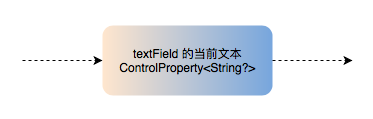

Observable & Observer 既是可被监听的序列也是观察者

在我们所遇到的事务中，有一部分非常特别。它们既是可被监听的序列也是观察者。
例如：textField的当前文本。它可以看成是由用户输入，而产生的一个文本序列。也可以是由外部文本序列，来控制当前显示的文本的观察者：
// 作为可被监听的序列
let observable = textField.rx.text
observable.subscribe(onNext: { text in show(text: text) })
// 作为观察者
let observer = textField.rx.text
let text: Observable<String?> = ...
text.bind(to: observer)
有许多 UI 控件都存在这种特性，例如：switch的开关状态，segmentedControl的选中索引号，datePicker的选中日期等等。
另外，框架里面定义了许多类型，都具有这样的特征。它们分别是：